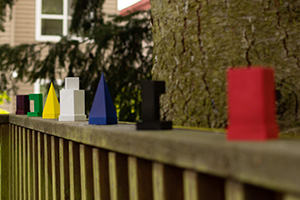
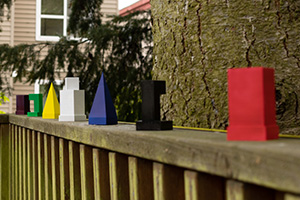
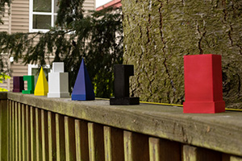
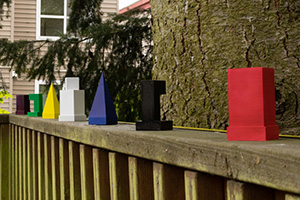
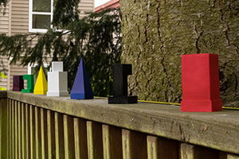
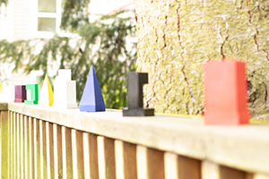
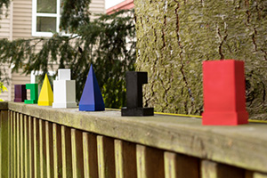
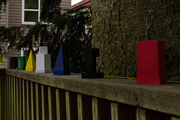
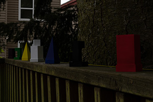
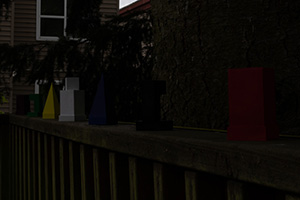

Aperture Settings
Improving your photography by controlling aperture
Background
Cameras with interchangeable lenses offer three primary settings that affect how a photograph is exposed when the shutter button is pressed. These are aperture, shutter speed, and sensitivity (also called “ISO”) and are often referred to collectively as the “exposure triangle.” Each setting impacts the brightness of a photograph while also providing its own unique impact. This guide will focus on aperture.
The aperture setting, called an f-number, is usually expressed like this: ƒ/11. The f-number is what fraction of the focal length the aperture diameter represents. A ƒ/2 aperture has a diameter equal to ½ of the focal length, and a ƒ/8 aperture has a diameter equal to ⅛ of the focal length. So as the aperture diameter decreases, the f-number increases.
F-numbers are not a continuous linear scale. The standard sequence of f-numbers is ƒ/1, ƒ/1.4, ƒ/2, ƒ/2.8, ƒ/4, ƒ/5.6, ƒ/8, ƒ/11, ƒ/16, and ƒ/22; but note that some lenses have numbers between these. These ratios have a specific mathematical relationship to each other in terms of how much light passes through the aperture. Each number in the standard sequence lets in half the light of the previous number, so an aperture set to ƒ/2.8 will let in twice as much light as it would when set at ƒ/4. A smaller f-number indicates a larger aperture which lets in more light, while a larger f-number indicates a smaller aperture, which lets in less light.
Since a smaller aperture lets in less light, it will result in a darker photograph. What is not as obvious is that a smaller aperture also causes more of your photograph to be in focus. In landscape photographs, objects far away from the camera are in focus, while in portrait photographs, it is common to see distant objects behind the subject that are out of focus. This difference is an effect of different aperture sizes. The range of distances that are in focus are referred to as the depth of field.
Aperture in action
Most cameras have two primary modes that allow the aperture to be set: aperture priority and manual mode. In aperture priority mode, you control the aperture, and the camera calculates an optimal shutter speed and sensitivity (also called “ISO”) setting. In manual mode, you control all the exposure settings, and changing aperture does not automatically change the other settings.
In the photographs below, there are seven colored objects lined up in a row with equal spacing. The white object in the center of the row is what the camera was focused on.
Aperture priority
In the images below, the aperture was set differently for each photograph. Then the camera automatically selected a shutter speed and sensitivity (ISO). Note how the background becomes more in focus as the f-number is increased.
| Photograph | Aperture | Shutter speed | Sensitivity (ISO) |
|---|---|---|---|
|  | ƒ/2.8 | 1/800 | 200 |
|  | ƒ/5.6 | 1/125 | 200 |
|  | ƒ/11 | 1/80 | 400 |
|  | ƒ/16 | 1/80 | 800 |
|  | ƒ/22 | 1/80 | 1600 |
Manual mode
In manual mode, it becomes more apparent that less light is reaching the camera sensor as the f-number increases. The photographs below use the same apertures as the images above, but the photographer has set the shutter speed to 1/30 second and the sensitivity to 100 for each photograph.
| Sample photograph | Aperture | Shutter speed | Sensitivity (ISO) |
|---|---|---|---|
|  | ƒ/2.8 | 1/30 | 100 |
|  | ƒ/5.6 | 1/30 | 100 |
|  | ƒ/11 | 1/30 | 100 |
|  | ƒ/16 | 1/30 | 100 |
|  | ƒ/22 | 1/30 | 100 |
Summary
Aperture is one of the key camera settings that affects your photography. As the aperture decreases, the amount of light reaching the camera sensor decreases, so your photo will be darker, but more of your subject will be in focus.
An f-number is the ratio of lens’ focal length to the diameter of the aperture. A larger f-number means a smaller aperture. The standard sequence of f-numbers is ƒ/1, ƒ/1.4, ƒ/2, ƒ/2.8, ƒ/4, ƒ/5.6, ƒ/8, ƒ/11, ƒ/16, and ƒ/22. Each progressively larger f-number in the standard sequence lets in half as much light as the previous one.
The two most common camera modes for aperture control are aperture priority and manual mode. In aperture priority, you set the f-number, and the camera calculates an optimal shutter speed and sensitivity. In manual mode, you control shutter speed and sensitivity in addition to aperture.
Back to top